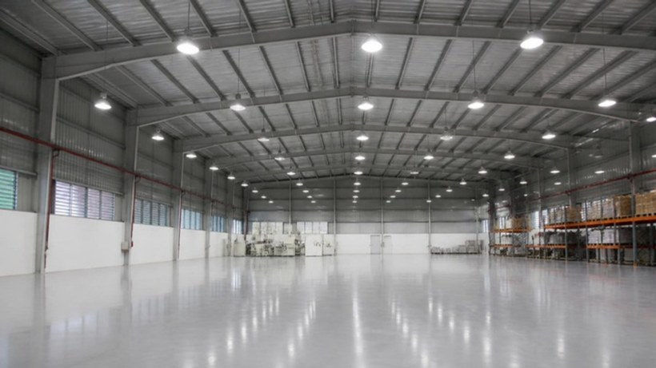
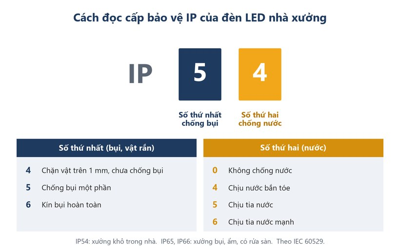
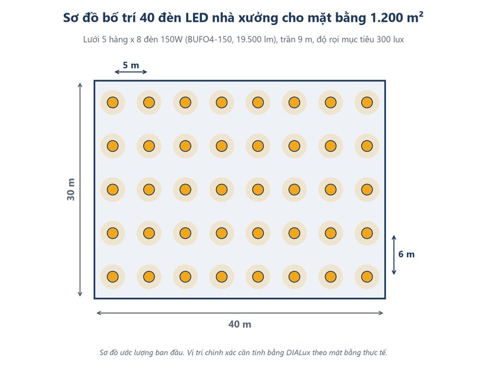

GHI CHÚ BIÊN TẬP. XÓA TOÀN BỘ PHẦN NÀY TRƯỚC KHI ĐĂNG.
LOẠI: CẬP NHẬT BÀI CŨ. Bài gốc ID 2323: https://denlednhaxuongcaocap.com/tu-van/chon-den-led-cho-nha-xuong/, tiêu đề hiện tại "8 Kinh nghiệm chọn đèn LED cho nhà xưởng tốt, giá rẻ".
Cách đăng: không bấm Đăng bản nháp này. Mở bài gốc ID 2323, thay toàn bộ nội dung bằng phần dưới dòng NỘI DUNG BÀI, sửa tiêu đề thành tiêu đề mới, cập nhật SEO title và meta description trong Rank Math, bấm Cập nhật, rồi chuyển bản nháp này vào thùng rác.
| Tiêu đề mới cho bài gốc | Cách chọn đèn LED nhà xưởng: 6 bước theo chiều cao, diện tích và môi trường |
| Focus keyword | cách chọn đèn led nhà xưởng |
| SEO title | Cách chọn đèn LED nhà xưởng: 6 bước đúng kỹ thuật |
| Meta description | Cách chọn đèn LED nhà xưởng theo chiều cao trần, độ rọi, quang thông và môi trường xưởng, kèm bảng chọn nhanh và ví dụ tính số đèn cụ thể. |
| Slug | chon-den-led-cho-nha-xuong (giữ URL cũ) |
| Tag đề xuất | đèn LED nhà xưởng, chiếu sáng nhà xưởng, độ rọi nhà xưởng, đèn UFO nhà xưởng, kinh nghiệm chọn đèn |
1. Placeholder còn lại
| Vị trí | Nội dung |
|---|---|
| Bước 1, bảng độ rọi | [CẦN KIỂM TRA] đối chiếu giá trị với TCVN 7114-1:2008, mã và năm ban hành |
| Bước 1 | [LINK: trang tra cứu TCVN 7114-1:2008] |
| Bước 4 | [CẦN KIỂM TRA] website có bán đèn nhà xưởng dạng dài không |
| Bước 5, xưởng nhiều bụi | [CẦN BỔ SUNG] có gợi ý đèn IP65/IP66 của hãng khác đang bán trên website hay để trung lập (dòng cao cấp chưa có model từ IP65) |
| Bước 5, xưởng nóng | [CẦN BỔ SUNG] dải nhiệt độ môi trường cho phép của dòng BUFO |
2. Nguồn đã dùng (truy cập 21/10/2026)
3. Link
Link nội bộ (5 URL, mỗi URL một lần): danh mục 100W, 150W, 200W (đoạn sau bảng ở bước 2); bài quy chuẩn độ rọi (bước 1); bài cấp bảo vệ IP (bước 5). Trang Liên hệ ở CTA là link CTA, không tính vào 5 link. BUFO4-150 chỉ nêu tên, không đặt link, để giữ đúng mức 3-5 link nội bộ.
Link từ bài cũ về bài này:
| Bài cũ | Vị trí đặt | Anchor |
|---|---|---|
| /tu-van/den-led-nha-xuong-chat-luong/ | Đầu H2 "Chất lượng ánh sáng" | cách chọn đèn LED nhà xưởng |
| /tu-van/cac-loai-den-led-nha-xuong/ | Đoạn nói về đèn highbay [CẦN KIỂM TRA] | chọn đèn nhà xưởng theo chiều cao trần |
| /tu-van/3-cach-treo-den-nha-xuong/ | Đoạn mở đầu [CẦN KIỂM TRA] | kinh nghiệm chọn đèn LED nhà xưởng |
| /tu-van/bang-gia-den-led-nha-xuong-150w/ | Trước bảng giá [CẦN KIỂM TRA] | tiêu chí chọn đèn LED nhà xưởng |
4. Ảnh cần chuẩn bị
5. Schema
Article cho toàn bài, FAQPage cho 4 câu hỏi thường gặp.
6. Chênh lệch phát hiện trên website
7. Điểm cần bạn quyết định
NỘI DUNG BÀI BẮT ĐẦU TỪ ĐÂY
Nhiều xưởng chọn đèn theo số W, lắp xong mới thấy sàn chỗ sáng chỗ tối, công nhân kêu chói, hóa đơn điện không giảm như kỳ vọng. Cách chọn đèn LED nhà xưởng đúng phải bắt đầu từ độ rọi cần đạt và chiều cao lắp, rồi mới tới công suất, kiểu đèn và thương hiệu.
Sáu điều cần chốt:

Độ rọi (đơn vị lux) là lượng ánh sáng rơi xuống bề mặt làm việc. Đây là con số đầu vào của mọi phép tính, thiếu nó thì mọi lựa chọn công suất chỉ là đoán.
Bảng dưới đây là mức độ rọi duy trì tham khảo cho một số khu vực phổ biến trong nhà xưởng. Bạn có thể xem giải thích chi tiết hơn tại bài quy chuẩn độ rọi theo từng không gian.
| Khu vực | Độ rọi tham khảo (lux) | Ví dụ |
|---|---|---|
| Kho chứa hàng | 100 | Kho thành phẩm, kho nguyên liệu |
| Lắp ráp thô | 200 | Lắp kết cấu thép, máy lớn |
| Khu đóng gói, xuất hàng | 300 | Bàn đóng gói, khu bốc xếp trong nhà |
| Lắp ráp, gia công vừa | 300 | Cơ khí, may mặc |
| Lắp ráp tinh | 500 | Linh kiện điện tử nhỏ |
| Kiểm tra sản phẩm | 750 trở lên | Kiểm tra lỗi bề mặt, kiểm màu |
[CẦN KIỂM TRA: đối chiếu toàn bộ giá trị trong bảng với TCVN 7114-1:2008 và ghi đúng mã, năm ban hành trước khi đăng] [LINK: trang tra cứu TCVN 7114-1:2008]
Một xưởng thường có kho, lối đi và khu thao tác nằm chung một mái. Nếu lấy mức 500 lux của khu lắp ráp tinh áp cho cả kho, bạn sẽ lắp thừa đèn ở phần diện tích chỉ cần 100 lux.
Cách làm hợp lý là chia mặt bằng thành các vùng, tính riêng từng vùng, rồi bổ sung đèn cục bộ tại bàn thao tác nếu một vài vị trí cần sáng hơn hẳn. Cách này thường rẻ hơn nâng độ rọi chung cho toàn xưởng.
Khi chọn đèn nhà xưởng theo chiều cao trần, điều cần nhớ là ánh sáng giảm nhanh theo khoảng cách. Cùng một bộ đèn, treo càng cao thì lượng sáng xuống tới sàn càng ít, nên trần cao cần đèn có quang thông lớn hơn và góc chiếu hẹp hơn.
Bảng sau là khoảng tham khảo phổ biến khi tư vấn cho nhà xưởng mặt bằng rộng, độ rọi mục tiêu khoảng 200-300 lux, dùng đèn có hiệu suất chiếu sáng (lượng ánh sáng trên mỗi watt, xem bước 3) khoảng 130 lm/W. Đây không phải tiêu chuẩn, số lượng và công suất chính xác cần tính theo mặt bằng thực tế.
| Chiều cao lắp | Công suất gợi ý mỗi đèn | Góc chiếu | Kiểu đèn phù hợp |
|---|---|---|---|
| 4-6 m | 50-100W | 90-120 độ | UFO nhỏ, đèn dạng dài |
| 6-8 m | 100-150W | 90 độ | UFO |
| 8-10 m | 150-200W | 60-90 độ | UFO, highbay có chao |
| 10-12 m | 200-250W | 60 độ | UFO, highbay có chao |
| Trên 12 m | 250-300W | 60 độ hoặc hẹp hơn | Highbay có chao |
Nếu trần cao 6-8 m, nhóm đèn LED nhà xưởng 100W thường là điểm bắt đầu. Trần 8-10 m chuyển sang đèn LED nhà xưởng 150W, và từ 10 m trở lên nên xem nhóm đèn LED nhà xưởng 200W trở lên.
Góc chiếu hẹp (60 độ) gom ánh sáng thành chùm, giúp ánh sáng đi xa xuống tới sàn khi treo cao. Góc chiếu rộng (120 độ) tỏa ánh sáng ra xung quanh, hợp với trần thấp để các vùng sáng của đèn liền kề chồng lên nhau, không để lại khoảng tối.
Làm ngược lại đều có hậu quả. Dùng góc 120 độ cho trần 10 m thì phần lớn ánh sáng rơi lên tường và kệ cao, sàn bị thiếu sáng. Dùng góc 60 độ cho trần 5 m thì dưới mỗi đèn có một vệt sáng tròn, giữa hai đèn bị tối, buộc phải lắp dày hơn mức cần.
Số W chỉ cho biết đèn tiêu thụ bao nhiêu điện, không cho biết đèn sáng bao nhiêu. Thứ quyết định độ sáng là quang thông (đơn vị lm, tổng lượng ánh sáng đèn phát ra). Tỷ lệ giữa hai số này gọi là hiệu suất chiếu sáng (lm/W), cho biết mỗi watt điện tạo ra bao nhiêu ánh sáng.
Ví dụ, đèn BUFO4-150 có quang thông công bố 19.500 lm, tức hiệu suất khoảng 130 lm/W (tính từ thông số công bố). Giả sử một đèn 150W khác chỉ đạt 100 lm/W, quang thông ước tính 15.000 lm. Để đạt cùng độ rọi trên cùng diện tích, đèn thứ hai cần nhiều hơn khoảng 30% số đèn, kéo theo thêm tiền điện, thêm điểm treo và thêm chi phí lắp đặt.
Khi xem bảng thông số, hãy kiểm tra quang thông được công bố là quang thông của cả bộ đèn hay của riêng chip LED. Quang thông của chip luôn cao hơn quang thông thực tế phát ra sau khi qua kính, chóa và tổn hao nhiệt. Nếu nhà cung cấp không ghi rõ, nên hỏi lại trước khi so sánh.
Ba kiểu đèn nhà xưởng phổ biến phân bố ánh sáng khác nhau, nên mỗi kiểu hợp với một kiểu mặt bằng.
| Kiểu đèn | Phù hợp | Không phù hợp |
|---|---|---|
| UFO (tròn, dẹt) | Xưởng mặt bằng rộng, trần 6-12 m, ít vật cản | Kho kệ cao, lối đi hẹp vì vùng sáng tròn bị kệ chắn |
| Highbay có chao | Trần trên 10 m cần gom sáng; xưởng cũ thay đèn cao áp, tận dụng móc treo sẵn | Xưởng nhiều bụi vì chao bám bụi, khó vệ sinh |
| Dạng dài | Kho kệ cao lối đi hẹp, dây chuyền lắp ráp, trần 4-8 m | Trần rất cao vì ánh sáng không đi xa bằng đèn có chao |
Đèn UFO là lựa chọn mặc định cho đa số xưởng sản xuất hiện nay vì gọn, nhẹ và tản nhiệt tốt. Với kho có kệ cao, đèn dạng dài treo dọc theo lối đi thường cho ánh sáng lên mặt kệ đều hơn so với đèn tròn.
[CẦN KIỂM TRA: website hiện có bán đèn nhà xưởng dạng dài không. Nếu không, giữ nội dung trung lập như trên và không đặt link sản phẩm.]
Cấp bảo vệ IP gồm hai chữ số: số đầu là khả năng chống bụi (6 là kín bụi), số sau là khả năng chống nước. Chỉ số hoàn màu (Ra) cho biết đèn hiển thị màu vật thể đúng tới đâu, thang tới 100. Chi tiết cách đọc xem tại bài cách đọc cấp bảo vệ IP.

Môi trường ít bụi và không có nước, đèn IP40 hoặc IP54 là đủ. Với xưởng may và điện tử, nên chọn Ra trên 80 để công nhân phân biệt màu chỉ, màu dây và lỗi bề mặt dễ hơn. Kho hàng thông thường chấp nhận Ra trên 70.
Ánh sáng trung tính (khoảng 4000-5000K) hoặc trắng (khoảng 6500K) đều dùng được. Xưởng làm ca đêm kéo dài thường chọn trung tính vì ít gây mỏi mắt hơn ánh sáng trắng xanh.
Bụi bám vào mặt đèn và cánh tản nhiệt làm đèn tối đi và nóng lên nhanh. Nên chọn đèn kín bụi, cấp bảo vệ từ IP65 trở lên, mặt kính phẳng để lau nhanh. Đèn IP54 như dòng BUFO4 chỉ chống bụi một phần nên không phải lựa chọn tối ưu cho môi trường này.
Khi tính số đèn cho xưởng bụi, nên lấy hệ số duy trì thấp (khoảng 0,7) để bù phần ánh sáng bị giảm giữa hai lần vệ sinh. [CẦN BỔ SUNG: dòng cao cấp chưa có model từ IP65 trở lên. Xác nhận có gợi ý đèn IP65/IP66 của hãng khác đang bán trên website (Philips BY239P, BPLCE-200, BPLCE-250, Rạng Đông BD HB03L 390/250W) hay để trung lập]
Nhiệt độ môi trường cao làm driver và chip LED xuống cấp nhanh hơn, đây là nguyên nhân hỏng sớm hay gặp nhất ở xưởng nóng. Cần chọn đèn có công bố rõ dải nhiệt độ làm việc cho phép, và không treo đèn ngay phía trên lò, máy ép nhựa hay miệng xả khí nóng.
Với vị trí nóng quanh năm, có thể cân nhắc đèn có driver tách rời đặt ở chỗ mát hơn. [CẦN BỔ SUNG: dải nhiệt độ môi trường cho phép của dòng BUFO]
Xưởng rửa sàn bằng vòi nước cần đèn từ IP66 trở lên, vì IP65 chỉ chịu tia nước thông thường. Vỏ đèn nên có lớp chống ăn mòn và gioăng kín ở mọi điểm nối, đặc biệt với xưởng thủy sản có hơi muối.
Khu chế biến thực phẩm nên tránh đèn dùng kính thường có thể vỡ rơi vào sản phẩm, hỏi nhà cung cấp về loại mặt đèn trước khi chọn.
Chip LED hiếm khi là bộ phận hỏng đầu tiên. Phần lớn đèn nhà xưởng hỏng sớm là do driver (bộ nguồn) và tản nhiệt kém, nên đây là hai thứ đáng hỏi kỹ nhất khi so giá.
Đèn rẻ trở thành đắt khi phải thay sớm. Với đèn treo 9-10 m, mỗi lần thay thường cần xe nâng hoặc giàn giáo, chi phí nhân công và dừng sản xuất có khi cao hơn tiền mua một bộ đèn.
Giả định: nhà xưởng cơ khí kích thước 30 m x 40 m, trần cao 9 m, giả sử cần độ rọi trung bình 300 lux trên toàn mặt bằng.
Nếu dùng đèn 150W hiệu suất 100 lm/W (quang thông ước tính 15.000 lm) cho cùng xưởng, số đèn tính ra là 360.000 / 7.200 = 50 đèn, nhiều hơn 11 bộ so với 39 đèn tính ra ở trên.
Kết quả trên chỉ để ước lượng ban đầu. Số lượng và vị trí đèn chính xác cần tính bằng phần mềm mô phỏng như DIALux theo mặt bằng, màu tường trần và vị trí máy móc thực tế.

Khi tư vấn cho các nhà xưởng, chúng tôi gặp lại khá nhiều lần những lỗi dưới đây.
Không nên. Đèn LED có hiệu suất chiếu sáng cao hơn nhiều so với đèn metal halide, nên thay cùng công suất thường làm xưởng sáng quá mức cần và tốn điện không cần thiết. Hãy chọn đèn LED có quang thông tương đương hoặc tính lại theo độ rọi, sau đó tận dụng vị trí treo cũ nếu khoảng cách phù hợp.
Thường nên gom về 2-3 mức công suất thay vì một loại cho cả xưởng. Ít loại đèn thì dễ dự phòng và thay thế, nhưng phần văn phòng, kho hoặc gác lửng thấp hơn khu sản xuất mà dùng chung đèn với khu trần cao sẽ bị thừa sáng. Chỉ dùng một công suất khi cả xưởng cùng chiều cao trần và cùng mức độ rọi yêu cầu.
Nên cân nhắc nếu xưởng không có sẵn xe nâng người hoặc giàn giáo. Tời nâng hạ cho phép hạ đèn xuống sàn để vệ sinh và bảo trì, giảm rủi ro làm việc trên cao và thời gian dừng máy. Với xưởng nhiều bụi phải vệ sinh đèn định kỳ, chi phí lắp tời thường sớm được bù lại.
Chỉ dùng được ở vị trí có mái che kín, không bị mưa tạt trực tiếp. IP54 chịu được nước bắn tóe nhưng không chịu được tia nước và mưa hắt liên tục. Mái hiên, cửa xuất hàng hở hoặc khu rửa xe nên chọn đèn từ IP65 trở lên.
Xưởng khô trần 4-6 m: đèn 50-100W, góc 90-120 độ; trần 6-8 m: đèn UFO 100-150W, góc 90 độ; trần 8-10 m: đèn 150-200W, góc 60-90 độ, IP54 là đủ. Trần trên 10 m: chuyển sang 200W trở lên với góc 60 độ. Xưởng bụi, ẩm hoặc có rửa sàn: ưu tiên cấp bảo vệ IP65, IP66 trước rồi mới xét giá. Kho kệ cao lối đi hẹp: cân nhắc đèn dạng dài treo dọc lối đi.
Gửi kích thước nhà xưởng, chiều cao lắp và độ rọi mong muốn qua trang liên hệ HLB hoặc hotline, Zalo 0967569588, chúng tôi tính số lượng và vị trí đèn bằng DIALux cho bạn.